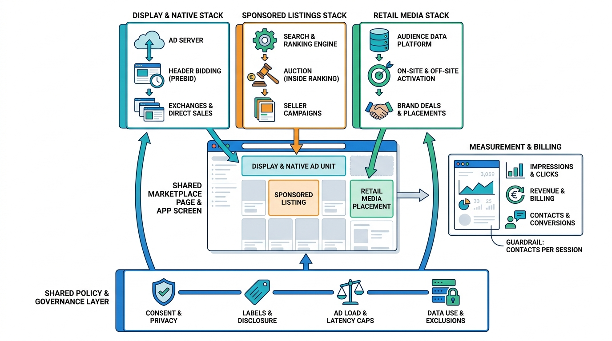

Part VI — MONEY: Conversion and Monetization
Selling Attention: Display, Native and Retail-Media Advertising

Image generated by Google Gemini (gemini-3-pro-image-preview)
Part VI — MONEY: Conversion and Monetization

Image generated by Google Gemini (gemini-3-pro-image-preview)